Implement Registration of UE’s with the Core Network
Step 1: Initialize the Service-Based Architecture (SBA) Dashboard
1. Open the SBA Simulator Dashboard
Launch the SBA Simulator Dashboard. This is the main interface for visualizing and managing all 5G Core Network Functions (NFs).
2. Verify Dashboard Initialization
Once the dashboard loads, verify the following:
- NF List Panel – Displays all available NFs (left or top section).
- Configuration Panel – Allows configuring each NF upon selection (right side).
- Logs Section – Displays real-time NF logs (bottom section).
- Command Terminal – Available per NF for debugging commands such as
ping.
Ensure:
- The UI is responsive.
- No errors appear during initialization.
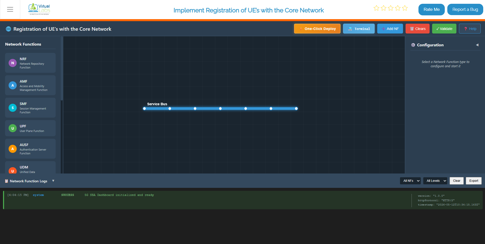
Fig: Service-Based Architecture (SBA) Dashboard
Step 2: Deploy Core Network Using Terminal
This method allows you to deploy all Network Functions and gNB services using Docker Compose from the terminal.
Step 2.1: Launch the Core Network
Click on the Terminal button to open the terminal, then from the project root directory, execute:
docker compose -f docker-compose.yml up -d
Executes Docker Compose to deploy core 5G network components (AMF, SMF, UPF, NRF, and others) in detached mode. Detached mode runs containers in the background, releasing the terminal session.
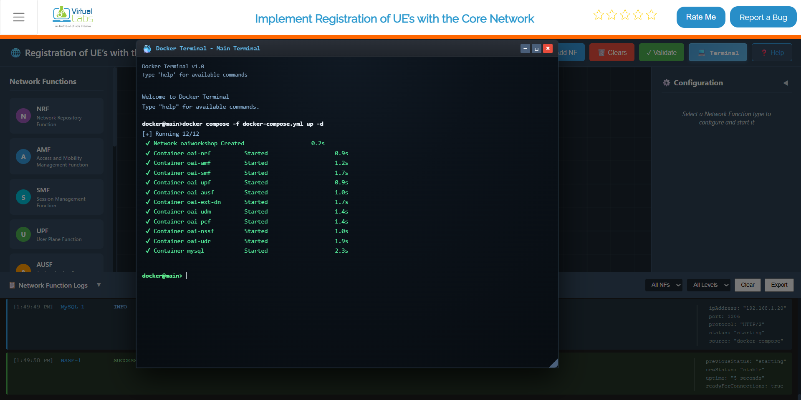
Fig: Core Network Deployment
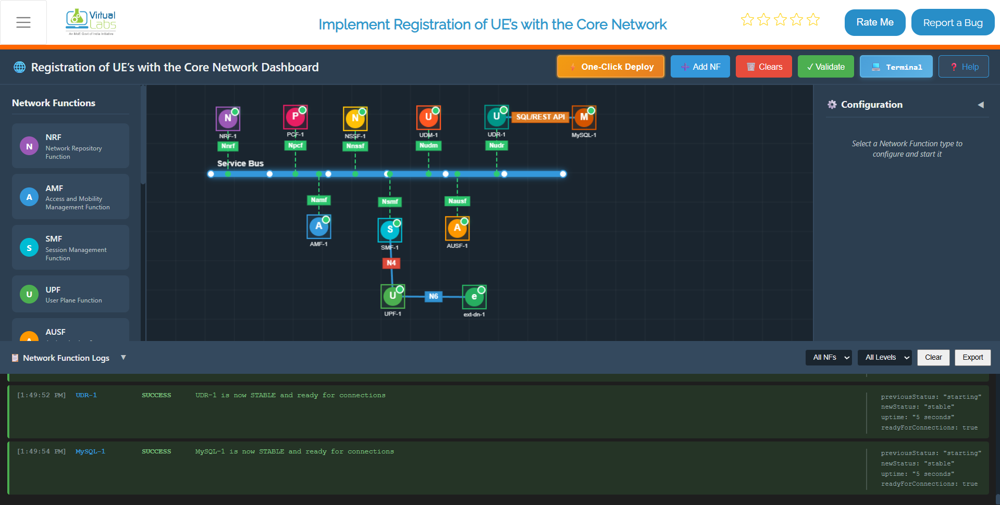
Fig: Core Network Deployed
Step 2.2: Launch the gNB Services
Once the core network is up and running, deploy the gNB services:
docker compose -f docker-compose-gnb.yml up -d
Deploys the gNB (next-generation NodeB), the 5G radio access point. Upon startup, the gNB automatically registers with the core network, establishing connectivity for UE traffic.
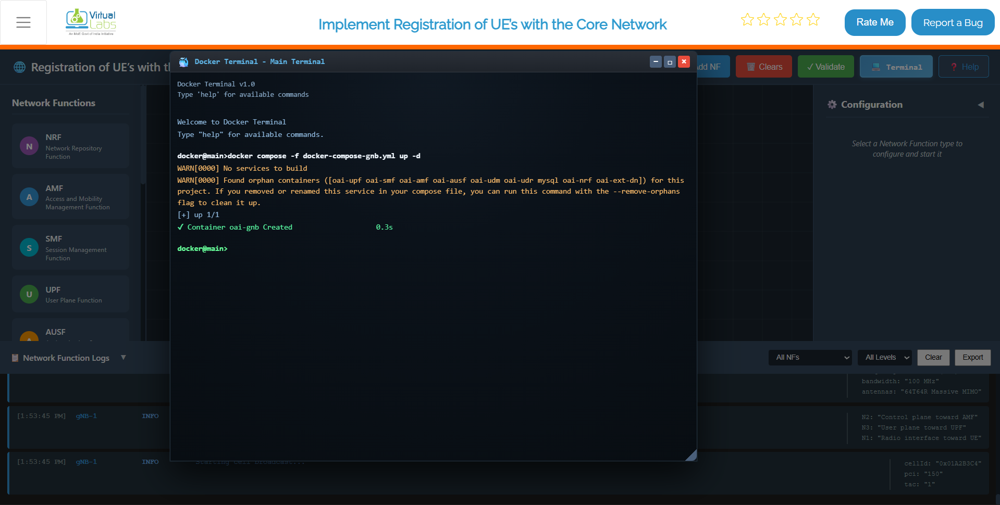
Fig: gNB Deployment and Core Integration
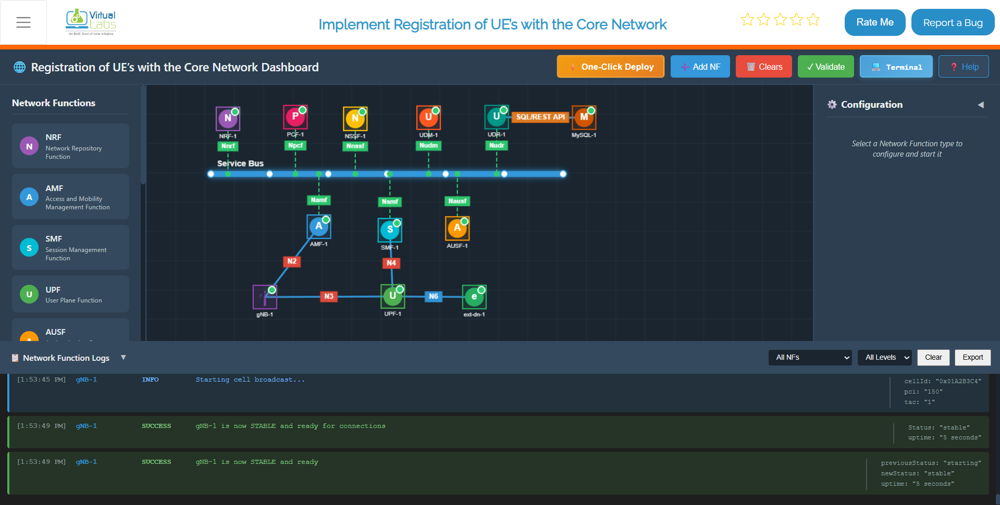
Fig: gNB Deployed and Core Integrated
Step 2.3: Monitor Container Status
To continuously monitor the status of the core network containers, use:
watch docker compose -f docker-compose.yml ps -a
Provides a continuously refreshing view of core network container status. The -a flag displays all containers, including stopped ones. Used for monitoring stabilization and detecting unexpected exits.
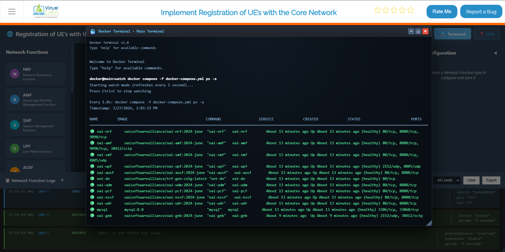
Fig: Live container status monitoring with watch command
Step 2.4: Verify Network and IP Assignment (Optional)
To verify the Docker network and IP assignments:
docker network inspect oaiworkshop
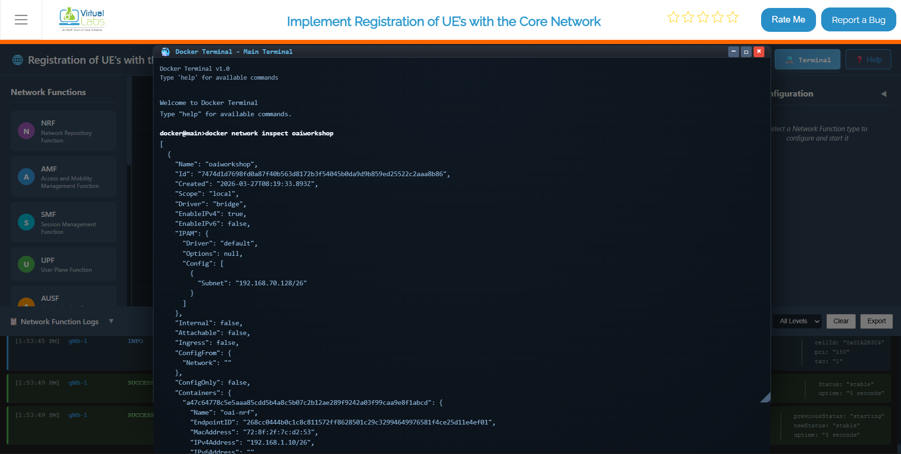
Fig: Docker network inspection showing container IP assignments
It shows you the full details of the oaiworkshop Docker network — which containers are connected, what IP addresses they've been assigned, and how the network is configured. If you ever need to verify that a specific NF got the right IP or that all containers are on the same network, this is the command to run.
Step 2.6: Stop All Services
When you're done with testing or need to reset the environment:
docker compose -f docker-compose.yml down
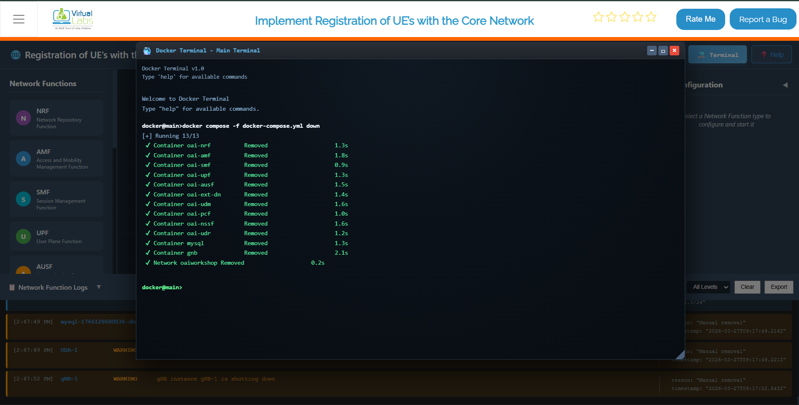
Fig: Stopping all services and removing containers with docker compose down
This command stops and removes all containers, networks, and associated resources.
Step 3: Configure and Start Network Functions (NFs)
After deployment, configure individual Network Functions from the dashboard to establish proper service operation.
Step 3.1: Select an NF to Configure
From the NF List on the dashboard, click on the NF you want to deploy.
Examples include:
- AMF (Access and Mobility Management Function)
- SMF (Session Management Function)
- UPF (User Plane Function)
- NRF (Network Repository Function)
- AUSF (Authentication Server Function)
- UDM (Unified Data Management)
- PCF (Policy Control Function)
Clicking an NF opens its Configuration Panel on the right.
Fig: Select NF and Open Configuration Panel
Step 3.2: Enter NF Configuration Details
In the configuration panel, enter the required fields:
IP Address:
- Provide a valid IPv4 address (e.g., 192.168.1.10)
- This is the address the NF will bind to for service communication
Port Number:
- Set the port on which the NF will run (e.g., 8080, 9090, etc.)
- Each NF should have a unique port to avoid conflicts
Protocol:
- Select either HTTP/1 or HTTP/2 depending on the NF behavior
- Some NFs may auto-select based on internal configuration
| Parameter | Example | Description |
|---|---|---|
| IP Address | 192.168.1.10 | IPv4 address for NF binding |
| Port Number | 8080 | Service listening port |
| Protocol | HTTP/2 | Communication protocol |
Step 3.3: Start the NF
Click the Start NF button. The NF will begin starting up.
Step 3.4: Wait for NF Stabilization
Once initiated:
- The NF takes around 4–5 seconds to stabilize
- During this time, it registers itself and establishes basic service readiness
- The NF attempts to connect to other available NFs
- Once stabilized, it becomes fully operational
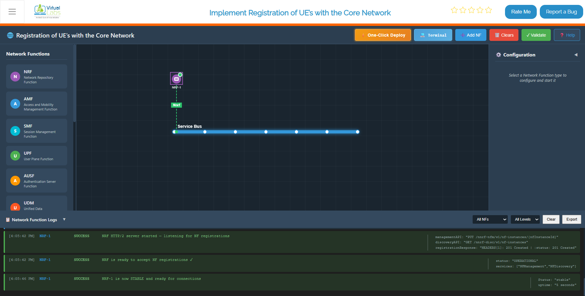
Fig: NF Stabilizing Process
Step 3.5: Verify NF Startup Logs
Scroll down to the Logs Section:
Successful startup messages include:
-
"NF started successfully"– Process/container started without errors -
"Service registration complete"– NF registered with NRF -
"NF ready to accept connections"– NF is live and operational
Example log output:
[AMF] 2024-01-15 10:32:45 - NF started successfully
[AMF] 2024-01-15 10:32:47 - Connecting to NRF at 192.168.1.11:8000
[AMF] 2024-01-15 10:32:48 - Service registration complete
[AMF] 2024-01-15 10:32:49 - NF ready to accept connections
This indicates the function is live and communicating (if any peer NFs are up).
Step 3.6: Repeat for All Remaining NFs
Follow the same steps (3.1–3.5) for each NF in the 5G Core:
- NRF (Network Repository Function) – Deploy first
- UDM (Unified Data Management) – Deploy second
- AUSF (Authentication Server Function) – Deploy third
- SMF (Session Management Function) – Deploy fourth
- UPF (User Plane Function) – Deploy fifth
- AMF (Access and Mobility Management Function) – Deploy sixth
- PCF (Policy Control Function) – Deploy last (optional)
For each NF, ensure:
- Starts correctly without errors
- Stabilizes within 4–5 seconds
- Appears in the logs as active
- Shows successful service registration
Once all NFs are deployed, configured, and stabilized, your 5G core setup becomes fully active and interconnected, ready for gNB and UE attachment.
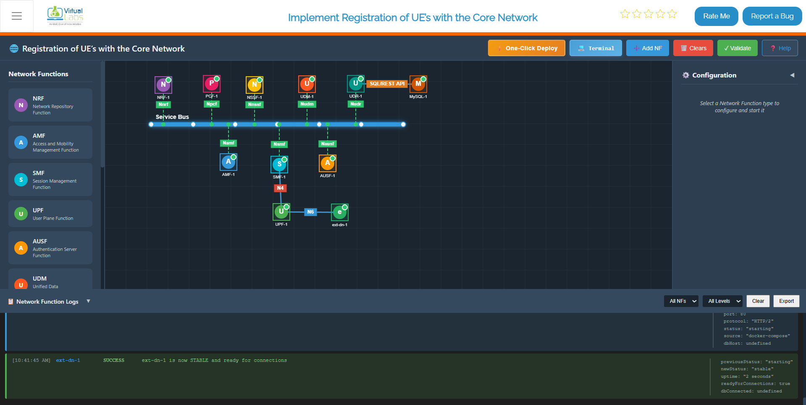
Fig: All NF deployed
Step 4: Start the gNB (Radio Access Node)
Once the core network is stabilized, configure and start the gNB (base station).
Step 4.1: Select and Configure the gNB
From the NF List Panel on the dashboard:
- Locate and click on the gNB tile
- The gNB Configuration Panel appears on the right
- Enter the following configuration details:
| Parameter | Example | Description |
|---|---|---|
| IP Address | 192.168.1.21 | IPv4 address for gNB binding |
| Port Number | 8089 | SCTP/UDP listening port (GTP-U port) |
| PLMN ID | 20801 | Public Land Mobile Network ID |
| gNB ID | 1 | Unique base station identifier |
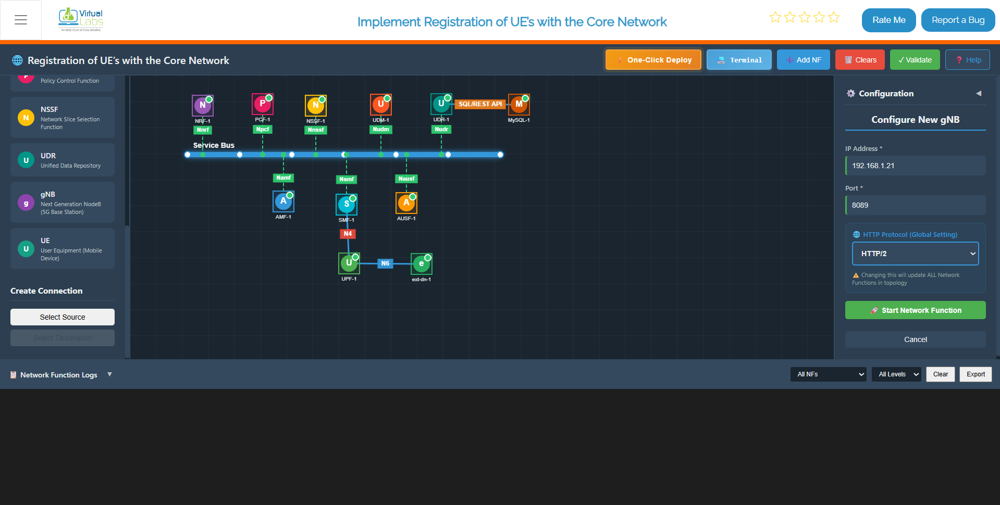
Fig: Configure & Start gNB
Step 4.2: Click Start gNB
Click the Start gNB button to launch the radio access node.
Step 4.3: Wait for gNB Stabilization
Within 5 seconds, the gNB will become stable. During this initialization:
- The gNB starts up and initializes radio resources
- SCTP association is established with the core network
- Internal service readiness checks are performed
- The gNB becomes available for UE connections
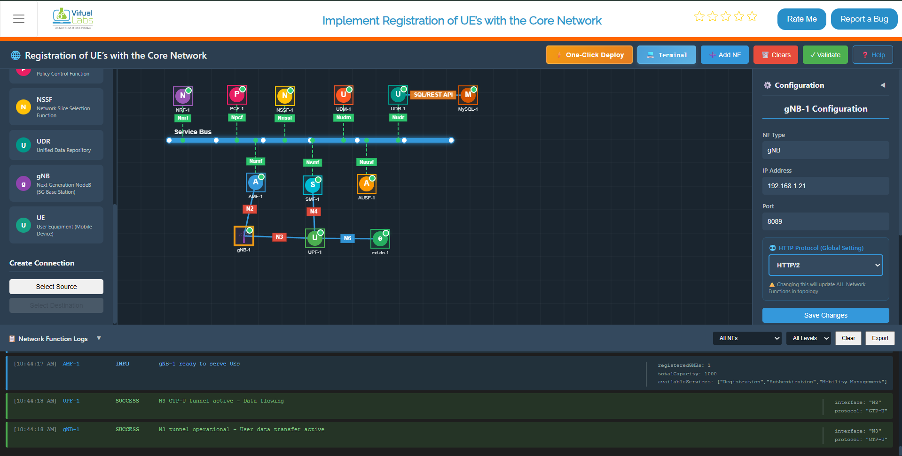
Fig: gNB deployed & Stablized
Step 4.4: Verify gNB Connections
The gNB will establish the following connections:
1. NGAP Connection with AMF (N2 Interface)
- Protocol: SCTP (Stream Control Transmission Protocol)
- Purpose: Access and Mobility Management
- Expected log:
"NGAP association established with AMF"
2. GTP-U Tunnel with UPF (N3 Interface)
- Protocol: GTP-U (GPRS Tunneling Protocol – User Plane)
- Purpose: User data forwarding
- Expected log:
"GTP-U tunnel created with UPF at 192.168.1.13:2152"
3. Service Registration with NRF
- All gNB services are registered in the Network Repository
- Expected log:
"gNB registered successfully in NRF"
Step 4.5: Verify gNB Logs
Scroll to the Logs Section and confirm these messages:
[gNB] 2024-01-15 10:35:00 - gNB started successfully
[gNB] 2024-01-15 10:35:02 - Initializing radio resources
[gNB] 2024-01-15 10:35:03 - SCTP association with core network established
[gNB] 2024-01-15 10:35:04 - NGAP association established with AMF
[gNB] 2024-01-15 10:35:05 - GTP-U tunnel created with UPF
[gNB] 2024-01-15 10:35:05 - gNB ready to accept UE connections
All messages indicate successful gNB startup and core integration.
Step 5: UE Configuration and Registration
Once the gNB is up and connected to the core network, you can configure and register User Equipment (UE).
Step 5.1: Configure the UE
From the dashboard, select the UE tile and enter the following in the UE Configuration Panel:
| Parameter | Example Value | Description |
|---|---|---|
| IMSI | 001010000000101 | 15-digit subscriber identifier |
| Key (K) | fec86ba6eb707ed08905757b1bb44b8f | 128-bit authentication key |
| OPc | C42449363BBAD02B66D16BC975D77CC1 | Operator variant key |
| DNN | 5G-Lab | Data Network Name |
| NSSAI SST | 1 | Slice Type (1=eMBB, 2=URLLC, 3=MIoT) |
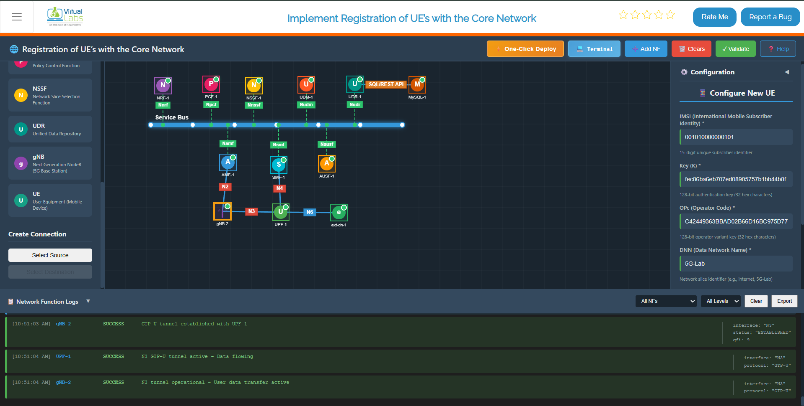
Fig: UE Configuration Panel
Step 5.2: Match Subscriber Profile
Ensure the UE configuration matches the profile stored in the UDR (Unified Data Repository).
This ensures successful authentication during the registration process.
Step 5.3: Start the UE
Click Start UE.
Within approximately 5 seconds, the UE:
- Stabilizes
- Sends registration messages to the core network
- Initiates authentication with the core
Step 5.4: UE-to-Core Connection Sequence
The following sequence occurs after starting the UE:
- N1 Connection Established – UE ↔ AMF connectivity established
- NAS Signaling Activated – Non-Access Stratum messages exchanged
- Authentication and Security Handshake Completed – UE is authenticated
- PDU Session Established – Data path created from UE through UPF
- IP Address Assignment – UE receives IP address on
tun_0(e.g.,192.168.100.2)
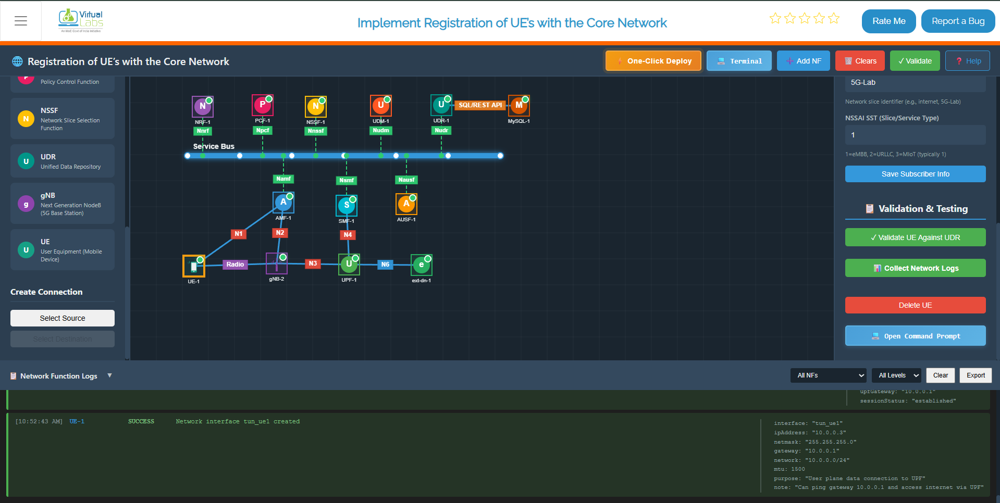
Fig: UE Registration and NAS Signaling
Step 6: Validate Connectivity
Once the UE is registered and assigned an IP address, validate end-to-end connectivity through the 5G network.
Step 6.1: Test Network Path Using Ping
From the UE terminal, test basic network connectivity:
ping -I oaitun_ue1 8.8.8.8 -c4
Expected result:
- Reply messages received from the destination
- 0% packet loss indicating stable connectivity
Example successful ping output:
PING 8.8.8.8 (8.8.8.8) 56(84) bytes of data.
64 bytes from 8.8.8.8: icmp_seq=1 ttl=119 time=25.3 ms
64 bytes from 8.8.8.8: icmp_seq=2 ttl=119 time=24.8 ms
64 bytes from 8.8.8.8: icmp_seq=3 ttl=119 time=25.1 ms
--- 8.8.8.8 statistics ---
3 packets transmitted, 3 received, 0% packet loss, time 6ms
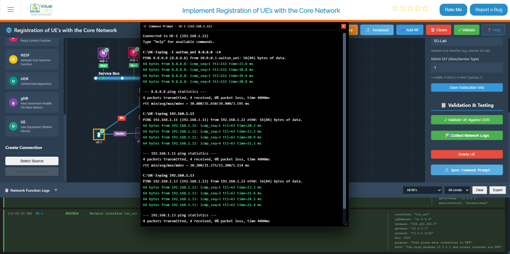
Fig: Successful Ping Test Through 5G Core
Example IP Mappings in Your Environment:
192.168.1.11– AMF (Access and Mobility Management Function)192.168.1.13– UPF (User Plane Function)192.168.1.16– External Data Network (External DN)
Step 6.2: Measure Throughput Using iPerf
Step 6.2.1: Start iPerf Server on External Data Network
Click on ext-dn-1, open its terminal, and run the following command to start the iPerf server:
iperf3 -s
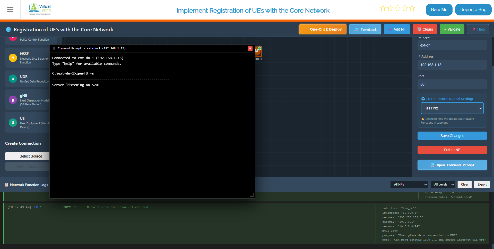
Fig: Starting iPerf Server on ext-dn-1
Step 6.2.2: Run iPerf Client from UE
To measure the throughput between the UE and external data network, use iPerf3:
Click on UE, open its terminal, and run the following command:
Throughput Test:
iperf3 -B <tun_ue_ip> -c <ext-dn_ip>
Replace:
<UE_ip>with the UE's assigned IP (e.g.,10.0.0.3)<ext-dn_ip>with the external data network IP (e.g.,192.168.1.15)
Example:
iperf3 -B 10.0.0.3 -c 192.168.1.15
Expected output shows:
- Transfer amount – Data transferred in MB/GB
- Bandwidth – Throughput in Mbps or Gbps
- Jitter – Variation in packet timing (lower is better)
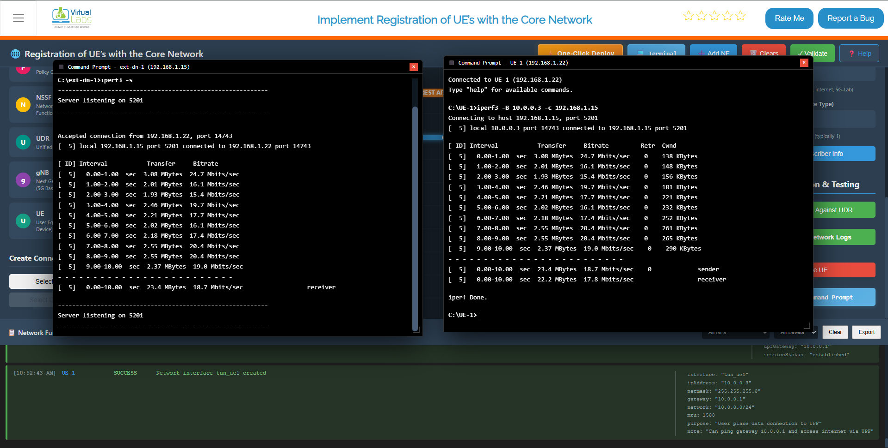
Fig: Throughput Measurement with iPerf
Step 6.3: Measure Round-Trip Time (RTT) Using iPerf
To measure RTT (latency) in the reverse direction:
RTT Test:
iperf3 -B <tun_ue_ip> -c <ext-dn_ip> -R
The -R flag reverses the test direction, measuring reverse throughput and RTT.
Example:
iperf3 -B 10.0.0.3 -c 192.168.1.15 -R
This measures the latency and throughput from the external network back to the UE through the 5G core network.
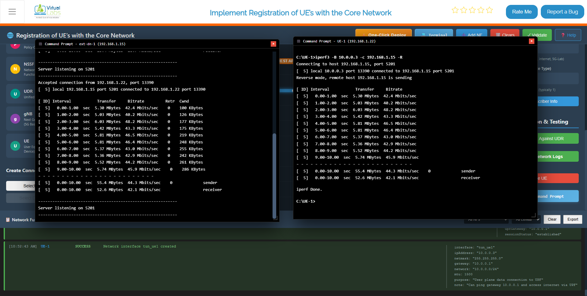
Fig: RTT Measurement with iPerf
Step 6.4: Verify Connectivity Success Criteria
Your 5G Core Network simulation is functioning correctly if:
All NFs Start Successfully – No errors during core network startup
gNB Connects to AMF and UPF – Base station registered with core network
UE Registers Successfully – User equipment attached to the network
UE Receives an IP Address – IP assigned on the TUN interface
Ping Shows 0% Packet Loss – Network path is stable
iPerf Shows Measurable Throughput – Data transmission is functional
If all criteria are met, your 5G network is ready for further testing and validation.